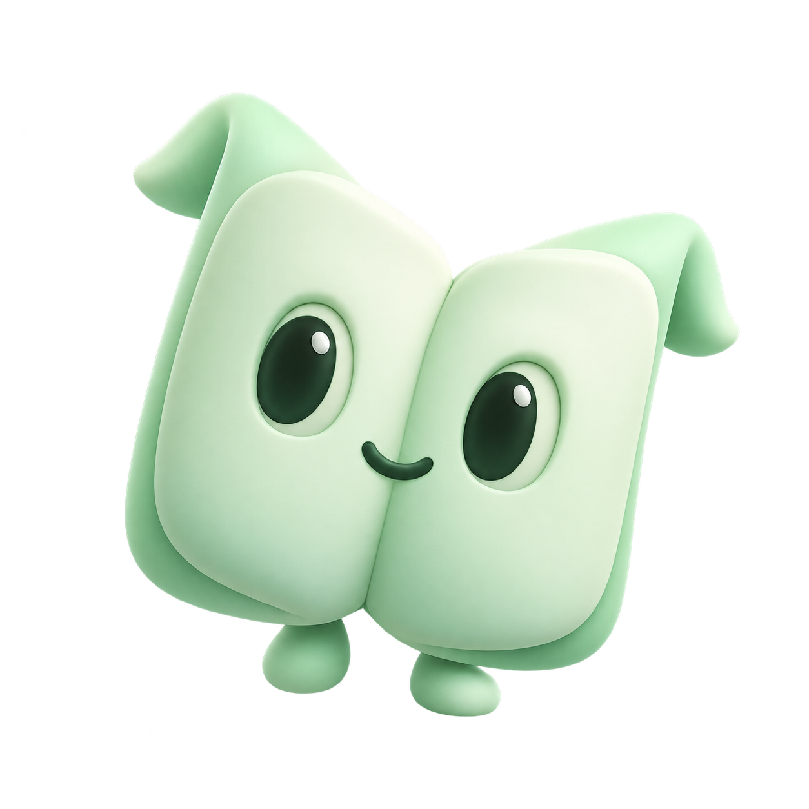

A companion for whatever catches your attention: an article, a social post, a physics idea, or an earnings report. Quiet while you read. One tap away when you need it.

A small, slow bob. Present without demanding attention.
A gentle pulse during actual context capture. No pretend thinking.
One happy lift when a result arrives, then stillness.